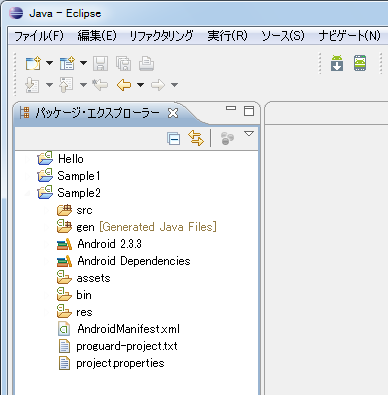
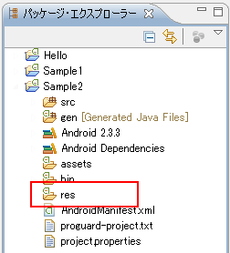
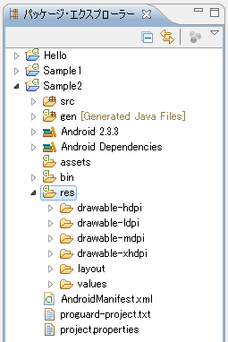
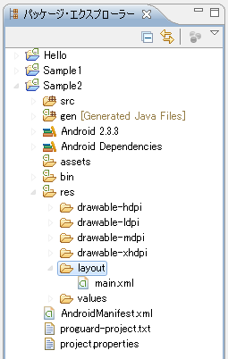
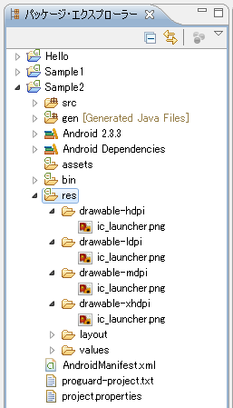
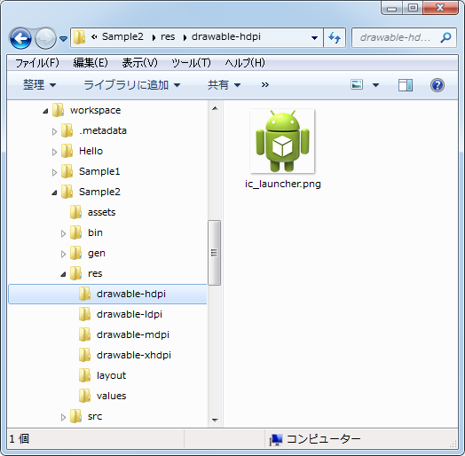

リソースタイプとファイルの設置
リソースには画像や文字列など色々なタイプがあり、タイプに応じて配置するディレクトリが決まっています。ここではリソースの種類と配置方法について解説します。
1.リソース用サンプルプロジェクトの作成
2.リソースタイプ
3.リソースの作成と設置
リソース用サンプルプロジェクトの作成
まずリソースに関して色々なテストを行うためのプロジェクトを一つ作成しておきます。作成方法は「Androidプロジェクトの作成」を参照して下さい。
プロジェクト名 : Sample2 アプリケーション名 : Sample2 パッケージ名 : jp.javadrive.sample2 Activity : Sample1Activity Minimum SDK : 10 (Android 2.3.3)
次のように作成されました。

今後はこのプロジェクトを使って色々試していきます。
リソースタイプ
それでは先程作成したプロジェクトのパッケージ・エクスプローラーを見て下さい。

リソースはプロジェクト毎に作成されている「res」ディレクトリの中に格納します。では「res」ディレクトリをクリックして展開して下さい。

リソースはタイプ毎に格納するディレクトリが決まっており、「layout」「values」といったディレクトリはその中の一つです。
それではリソースのタイプにどのようなものがあるのかを確認します。詳細はAndroid Developersの「Providing Resources」に記載がありますので別途確認して下さい。
| ディレクトリ | 説明 |
|---|---|
| animator | property animationsを定義したXMLファイル。 |
| anim | tween animationsを定義したXMLファイル。 |
| color | 状態に応じ色のリストを定義したXMLファイル。単なる色の定義は「values」ディレクトリ。 |
| drawable | 画像ファイル(.png, .9.png, .jpg, .gif)や形状などを定義したXMLファイル。 |
| layout | アクティビティなどに配置するビュー及びレイアウトを定義したXMLファイル。 |
| menu | アプリケーションのメニューを定義したXMLファイル。 |
| raw | 任意の形式で任意のファイルを設置。 |
| values | 文字列や数値や色といった値を定義したXMLファイル。 |
| xml | 任意の内容が含まれるXMLファイル。 |
例えばアクティビティのページで解説した「main.xml」ファイルのようなレイアウトが定義されたXMLファイルは、「layout」ディレクトリの中に格納します。

リソースは画像ファイルなどをのぞけばXMLファイルとして用意されます。ファイル名には特に決まりはないので、任意の名前を付けて頂いて構いません。また同じディレクトリ内に複数のXMLファイルや画像ファイルを格納できます。詳しくは別のページで解説しますが、これらのリソースは決められたディレクトリに配置されることで自動的にIDが割り当てられ、プログラムの中からIDを指定してリソースを読み込んで利用することができる仕組みになっています。
また画像ファイルなどを格納するディレクトリ名は「drawable」ですが、作成されたプロジェクトを見ると「drawable-hdpi」や「drawable-ldpi」といった似たような名前のディレクトリが複数作成されています。

こちらも別のページで詳しく説明しますが、「drawable」というディレクトリに画像を格納した場合は、どのような端末でアプリを起動しても同じ画像が使われます。もし高い画像密度の端末の場合にはより大きい画像を使用したい場合は別途「drawable-xdpi」というディレクトリを用意し、大きめの画像を格納しておけば、高い画像密度の端末でアプリが起動した場合だけ「drawable-xdpi」に格納された画像ファイルを自動的に使用させることができます。
リソースの作成と設置
リソースの多くはXMLファイルなので、Eclipse上でXMLファイルを作成することもできますし、ローカル環境で別途作成したXMLファイルや画像ファイルをEclipseのパッケージ・エクスプローラーのディレクトリの中にドラッグ＆ドロップすることもできます。
またプロジェクトが実際に保存されているワークスペース内のディレクトリに直接ファイルをコピーしても構いません。

ローカルでファイルをコピーすれば自動的にEclipseのプロジェクト上でもファイルを認識してくれます。
それでは次のページで作成したリソースをどのようにプログラム内から利用するのかについて解説します。
( Written by Tatsuo Ikura )

著者 / TATSUO IKURA
初心者～中級者の方を対象としたプログラミング方法や開発環境の構築の解説を行うサイトの運営を行っています。